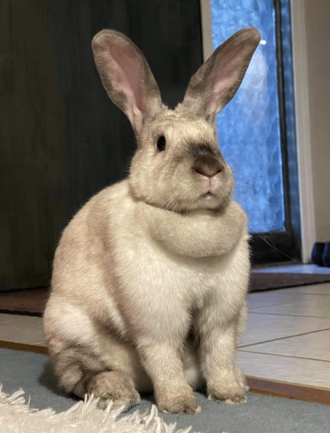

Bellini
Breed: Mix
Sex: Female
Age: 4 Years, 2 Months
Weight: 9.3 Pounds
Bio
I was rescued from a backyard hoarding situation in the winter, right after we had almost a foot of snow and
negative windchill for almost a week. I had parasites along with several of the other rabbits I was living with,
and on top of being sick, I was pregnant! Fortunately I came to rescue and was safe, warm, and well fed when I
gave birth to my nine babies, and they have grown up healthy and loved. And my rescue family gave me the name
Bellini!
With everything I've been through, I'm still a sweet, mild tempered, patient, laid back bun.
Unfortunately I started having problems breathing and began to get weak, I just couldn't get comfortable and was
losing energy to even groom myself or my babies. I went to a special vet and they discovered I have an enlarged
heart and I'm in congestive heart failure!
Fortunately my babies were just old enough to go on their own
a bit early, which allows me to take the medicine I need to feel better. Now that I have heart medicine, I've done
a total turn around! I'm learning how to bunny for the first time. I can now do normal bunny things like groom
myself, play with toys, binky, and even do zoomies! Due to my illness I'm not able to be spayed. The nice rescue
people will let me live out the rest of my life being well taken care of in a healthy clean stable environment
with the best care possible. My medical needs will last the rest of my life, and I could use donations to cover
the costs of medicine and follow up diagnostics.
Want to Support Me?
To support me, or any of the sanctuary rabbits at the IHRS, please Donate to our GoFundMe if you are able.